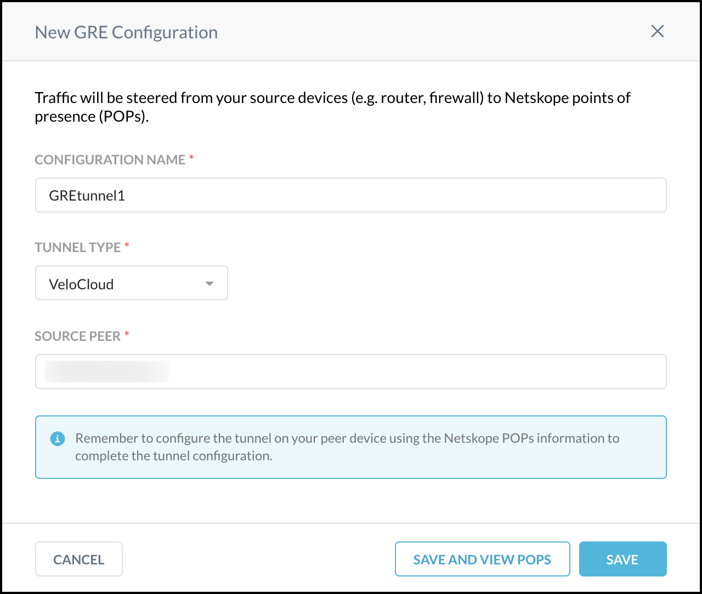
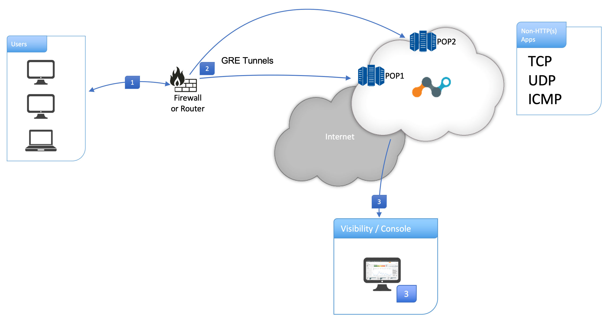

Configure a GRE Tunnel
Generic Routing Encapsulation (GRE) is a tunneling protocol for encapsulating packets inside a transport protocol. A GRE tunnel functions like a VPN but without encryption; it transports packets from one endpoint to another endpoint. A GRE establishing or terminating device, encapsulates a payload packet inside a GRE packet, which it then sends over the internet.
GRE can steer HTTP(S) and non-HTTP(S) traffic to the Netskope cloud. The Netskope GRE gateway validates the source IP of the tunnel as a known IP address which must be configured in the Netskope UI.
Prerequisites
To use GRE:
Ensure you have a Netskope Cloud Firewall license, which enables GRE in your tenant.
Configure your source device to establish the GRE tunnel. Refer to your device documentation for specific configuration instructions.
Configure your firewall, if any, to allow the GRE tunnel. If a firewall has an ACL blocking inbound connections, configure a rule to allow GRE traffic. Refer to your firewall documentation for specific configuration instructions.
If your source peer network uses NAT based on an endpoint IP address, the Netskope GRE service will observe only one IP address, and that will impact GRE load balancing, performance, reporting, and policy granularity. Your source peer network should not NAT an endpoint IP address.
The GRE gateway node can respond to ICMP probes/keep-alives only when the destination IP value in the inner IP packet matches the GRE gateway probe IP listed in the GRE gateway UI Dashboard corresponding to the Netskope POP. Otherwise, the probe packets are dropped by GRE.
Set the recommended Maximum Transmission Unit (MTU) and Maximum Segment Size (MSS). For more information, see Deploying GRE Tunnels.
Workflow
The primary steps to configure GRE include:
Configure GRE in the Netskope UI.
Configure the GRE tunnel from the source device so that a primary and a failover exists. You can configure as many GRE tunnels as needed from the sites that you tunnel traffic from. Netskope currently does not have a limit on the number of GRE tunnels to configure. Each tunnel supports up to 1 Gbps throughput.
Configure GRE in the Netskope UI
Add the IP addresses of your routers/firewalls in the Netskope admin console and copy Netskope POPs IP addresses to establish GRE tunnels on your devices. Netskope recommends having two tunnels for each egress location in your network.
Go to Settings > Security Cloud Platform >Traffic Steering > GRE.
Click New GRE Configuration to register your devices.
Enter a name for the tunnel in the Configuration Name field.
 Enter the source peer IP address (exit public IP) of your router/firewall that Netskope will receive packets from. Netskope identifies traffic belonging to your organization through your router/firewall IP addresses.
Click Save and View POPs. Copy the Netskope points of presence (POP) IP addresses for the two locations closest to you. You will need this information to establish GRE tunnels on your devices.

After a tunnel has been established on your devices, the tunnel appears in the table on the GRE page. The table shows the configuration name, source peer, Netskope POP(s), user traffic status, keepalive status, and throughput in kilobytes per second (Kpbs). The user traffic status types are Seen and Unseen.
Click on a tunnel name to edit the GRE tunnel configuration. Also, click the  icon to the right of the tunnel listing to edit, enable, disable, or delete the tunnel.
icon to the right of the tunnel listing to edit, enable, disable, or delete the tunnel.
You can also search for tunnel configuration using the filters for source peer, Netskope POP, User Traffic Status, and Keepalive Status.
Configure GRE Tunnels on Source Device
Netskope recommends configuring two GRE tunnels from your location to the Netskope POPs. This ensures high availability for tunneling traffic through GRE. Here is an example of how to configure your GRE tunnels:
|  |
Configure your router/firewall for GRE. Refer to Deploying GRE Tunnels and Monitoring GRE Tunnels below for specifics.
Configure the GRE tunnels to direct traffic to the Netskope POPs.
Traffic is directed through the Netskope cloud.
Deploying GRE Tunnels
Create two GRE tunnels for each egress location in your network. Having two GRE tunnels ensures that connectivity is maintained in the event of an outage on the primary tunnel. The second GRE tunnel takes over until the first GRE tunnel gets restored. The second tunnel should be connected to a different Netskope data center than the first one.
Ensure the GRE key is not specified even if it is available in the CPE configuration.
Important
Use policy-based routing to steer non-HTTP(S) traffic (TCP, UDP, and ICMP) through the GRE tunnels.
MTU Configuration Recommendation
L3 MTU size on the client devices that will send traffic to the Netskope Cloud Firewall should be set to 1476 bytes. The MTU value at the router or firewall can continue with the default MTU value of 1500 bytes.
Netskope recommends UDP applications on the client devices to support path MTU discovery (PMTUD) to avoid IP fragmentation if the MTU value is not changed to 1476 bytes.
If the IP packet size exceeds 1476 bytes and has the Don't Fragment (DF) bit set, Netskope GRE gateway drops the packet and sends the client an ICMP destination unreachable message with a code indicating "fragmentation needed and DF set". If the IP packet doesn't have the DF bit set, Netskope GRE gateway silently drops the packet.
TCP MSS Recommendation
Netskope GRE gateway adjusts MSS automatically for TCP traffic.
Monitoring GRE Tunnels
Monitor your GRE tunnels to ensure failover between the primary and backup GRE tunnels. Enable GRE keepalives as a basic detection mechanism.
You can use IPSLA or keepalive on the tunnel interface to monitor the tunnels.
Keepalive on devices use a GRE packet with the source and destination IP addresses reversed to be sent as the inner payload from the source peer. The GRE destination relays the inner packet to indicate the tunnel is up.
Or you can use RPM or keepalive to monitor the tunnels.
Keepalive on devices use an ICMP packet with the endpoint’s inner IPs to be sent over the GRE tunnel. These inner IPs are allocated by Netskope so that Netskope GRE gateway can be configured to respond that the tunnel is up.
For high-availability, keepalive functionality enables GRE endpoints to failover to a backup tunnel if a response is not received. The Netskope GRE gateway sends back a keepalive response only if there are no health check issues with a tenant specific proxy.
If the Netskope GRE gateway does not observe any keepalive packet within a minute, then the tunnel probe status will be flagged as down, and the GRE service will update the keepalive status as Not Seen in the Netskope UI.
Troubleshooting
If end-to-end traffic is not working:
Check if the GRE tunnel status to see if it is up on the exit router.
Check the tunnel interface counters to see if they are going up or not, which would indicate the transit of traffic.
If a tunnel is down, check to make sure the GRE/ICMP keepalives sent by the exit router is receiving the keepalive response back.
If a tunnel is down, end-to-end traffic should be working through the router's default-gateway.
If the tunnel is up, check the route-map configured to re-direct the traffic.
Make sure the firewall is allowing GRE traffic.
Make sure the router exit IP (public IP) is added to the GRE page from Netskope console (tenant UI).
Contact Netskope Support.
Performance issues:
Check the MTR against the Netskope GRE IP address. It should show RTT between your environment to the Netskope Cloud. It will also show packet drops.
Capture packets at the endpoint egress interface using Wireshark. It will show complete TCP statistics.
GRE device status:
Login into the source peer device to determine the GRE tunnel status. If the tunnel is down, there is high chance that the device is not able to communicate with Netskope GRE service, or this GRE node/site is not yet provisioned. Go to the Netskope GRE page to confirm.